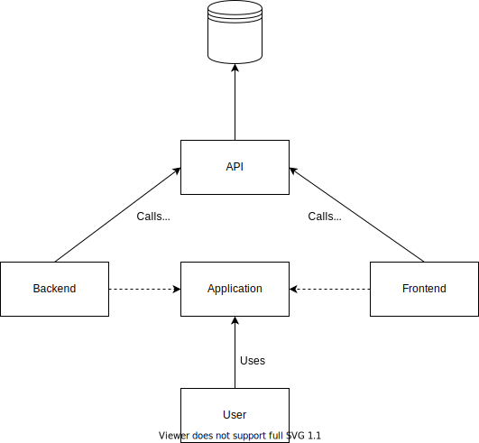
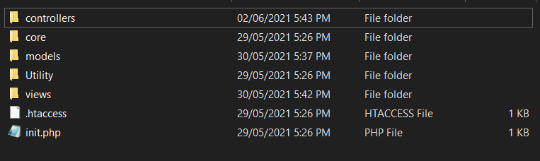

Workout Generator - Documentație
Autori
- Bulbuc Razvan
Afilieri
- Faculty of Computer Science University "Alexandru Ioan Cuza" Iasi - Romania
Cerințe
Să se creeze o aplicație Web ce le oferă utilizatorilor diverse tipuri de antrenamente sportive personalizate. Utilizatorii autentificați vor putea să specifice preferințe pentru antrenamentul dorit: grupe de mușchi, locație, durată. Aplicația va oferi statistici relevante pentru fiecare utilizatori în parte, și un clasament global al celor mai activi utilizatori.
Introducere
Pe lângă cerințele prevăzute în punctul anterior, aplicația oferă și alte funcționalități: crearea antrenamentelor sportive manual, vizionarea istoricului antrenamentelor unui utilizator, posibilitatea de a șterge sau edita antrenamentele deja existente, și posibilitatea de a parcurge un antrenament cu un timer din aplicație.
Arhitectura aplicației
Aplicația folosește design pattern-ul MVC și un API REST, care va fi prezentat mai tîrziu. Diagrama de mai jos descrie pe scurt structura generală.
Backend
Backend-ul este construit folosind paradigma MVC. Următoarea imagine reprezintă conținutul directorului de backend.
Controller-urile folosite sunt următoarele:
- Admin - controlează toate funcționalitățile administratorului - gestionarea exercițiilor.
- Authorization - controlează logarea și înregistrarea utilizatorilor.
- ErrorMessage - apelează view-ul de eroare.
- Home - controlează pagina de primire a unui utilizator logat.
- Settings - controlează pagina de setări a unui utilizator.
- Welcome - controlează pagina de primire a unui utilizator nelogat.
- Workouts - controlează toate funcționalitățile referitoare la antrenamente - creare, generare etc.
Exemplu de cod
Urmează un exemplu de cod ce conține apel către API cu librăria cURL. Este vorba de funcția index() al controller-ului Home.
public function index() {
$curlHandle = curl_init("http://92.115.143.213:3000/project/api/users/" . $_SESSION["SESSION_USER"]);
curl_setopt($curlHandle, CURLOPT_RETURNTRANSFER, true);
curl_setopt($curlHandle, CURLOPT_HTTPHEADER, ["Authorization: " . $_SESSION["LOGIN_KEY"]]);
$curlResponse = json_decode(curl_exec($curlHandle), true);
if ($curlResponse["statusCode"]) {
Redirect::errorPage($curlResponse["description"]);
}
$response = $curlResponse["description"];
$userHomepage = $this->model("UserHomePage");
foreach ($userHomepage as $key => $value) {
if (isset($response[$key])) {
$userHomepage->setInfo($key, $response[$key]);
}
}
$uri = "http://92.115.143.213:3000/project/api/users/" . $_SESSION["SESSION_USER"] . "/workouts/history?limit=1";
curl_setopt($curlHandle, CURLOPT_URL, $uri);
$curlResponse = json_decode(curl_exec($curlHandle), true);
if ($curlResponse["statusCode"]) {
Redirect::errorPage($curlResponse["description"]);
}
$response = $curlResponse["description"];
if (count($response)) {
$userHomepage->setInfo("lastWorkout", $response[0]);
}
else {
$userHomepage->setInfo("lastWorkout", null);
}
$this->view('home/home', $userHomepage);
}
Detaliile despre modul de logare vor urma în secțiunea despre API.
Frontend
Structura unei pagini a aplicației este următoarea: un Navigation Bar, urmat de conținutul propriu-zis al paginii, și un footer care este același peste tot. Sunt 2 tipuri de Navigation Bar:- Unsigned Navbar - conține referință la raportul tehnic, și la pagina de logare.
- Signed Navbar - conține referință la antrenamentele utilizatorului, statisticile globale, setările de profil ale utilizatorului, și la butonul de delogare.
- Welcome - pagina de sosire pentru utilizatorii nelogați.
- Login și Register - paginele de logare și înregistrare.
- Home - pagina de sosire a utilizatorilor logați. Aici sunt afișate statisticile utilizatorului: perioada curentă de activitate, cea mai lungă perioadă de activitate, numărul de antrenamente efectuate. De asemenea, este afișat ultimul antrenament efectuat(dacă este) și un buton pentru începerea acestuia, buton pentru pagina de istoric al antrenamentelor, și butonul RSS Feed.
- My Workouts - afișează toate antrenamentele utilizatorului, butoane pentru începerea și vizionarea detaliată ale acestora, și butoane pentru crearea unui nou antrenament, fie manual, fie prin generare.
- Global Statistics - afișează clasamentul global al utizilatorilor, care poate fi sortat după statistica dorită.
- Workout History - afișează istoricul antrenamentelor și butoane pentru începere sau vizionare detaliată. Antrenamentele pot fi sortate după data efectuării acestora.
- Settings - pagina de setări a utilizatorului, care este împărțită în 2 tipuri de setări: setări ale utilizatorului(vârsta, înălțimea, greutatea), și setări de cont(email, username, parolă). Acestea sunt împărțite în 2 tab-uri, care pot fi schimbate dinamic, fără încărcarea altei pagini.
- Run - pagina de efectuare a unui antrenament. Permite schimbarea dinamică a exercițiului curent, și oferă un timer pentru fiecare exercițiu.
- Admin - pagina accesibilă doar de un administrator. Permite modificarea, ștergerea și adăugarea exercițiilor.
Exemplu de cod
În multe pagini, în loc să preiau datele de la API din backend și să le folosesc în view folosind o variabilă Model, am ales să folosesc apeluri AJAX pentru a îmbunătăți experiența utilizatorului. Un exemplu ar fi pagina de logare: dacă se introduc date greșite de logare, apare dinamic text care informează utilizatorul despre aceasta, fără a se schimba pagina. O bună parte din pagini folosește apelurile AJAX în loc de cele cURL; în urmare voi prezenta codul JavaScript pentru pagina de logare.
let loginForm = document.getElementById("login-form");
let errorMessage = document.getElementById("error-message");
loginForm.addEventListener('submit', checkCredentials);
function checkCredentials(event) {
event.preventDefault();
errorMessage.classList.add('error-message--hidden');
sendRequest();
}
const sendRequest = async () => {
var queryString = {};
var formData = new FormData(loginForm);
formData.forEach(function(value, key) {
queryString[key] = value;
});
var query = Object.keys(queryString)
.map(k => encodeURIComponent(k) + '=' + encodeURIComponent(queryString[k]))
.join('&');
var apiUri = "http://92.115.143.213:3000/project/api/users/login?" + query;
const response = await fetch(apiUri, {
method: 'GET',
headers: {
'Content-Type': 'application/json'
}
});
const responseBody = await response.json();
if (!responseBody["statusCode"]) {
window.location.href = "/project/public/authorization/beginSession/" + responseBody["description"];
}
else {
showErrors();
}
}
function showErrors(errorCode) {
errorMessage.classList.remove('error-message--hidden');
document.getElementById("password-field").value = '';
}
Din nou, detalii despre API vor urma în secțiunea corespunzătoare.
API
A doua componentă a aplicației; oferă toate funcționalitățile aplicației prin numeroase endpoint-uri. Folosește un sistem de routing ușor extensibil printr-un fișier JSON, și gestionează baza de date.
Baza de date
Schema bazei de date este următoarea:
- Users - tabelul utilizatorilor.
- User Login Key - păstrează cheile de login ale utilizatorilor.
- Workouts - tabelul antrenamentelor, are un ID de utilizator ca atribut. Deci, un antrenament aparține doar unui singur utilizator.
- Workout History - tabelul istoricului antrenamentelor utilizatorilor.
- Workout Exercises - păstrează exercițiile unui antrenament.
- Exercises - păstrează exercițiile aplicației.
- Locations - locațiile posibile unde pot avea loc exercițiile.
- Muscle Groups - Grupele de mușchi care pot fi lucrate de exerciții.
- Exercise Locations - tabelul de asociere pentru un exercițiu și locațiile unde acesta poate avea loc.
- Exercise Worked Muscles - tabelul de asociere pentru un exercițiu și grupele de mușchi lucrate de acesta.
Routing
Orice cerere pentru API începe cu redirectarea către script-ul routing.php, care inițializează o conecțiune cu baza de date, și trimite informațiile despre cerere altui script, care returnează Controller-ul și handler-ul corespunzător cererii.
require_once("ControllerRouter.php");
require_once("../controllers/Controller.php");
require_once("../DatabaseConnector.php");
require_once("../models/Response.php");
header('Content-type: application/json');
$databaseStatus = DatabaseConnector::getInstance()->checkConnection();
if ($databaseStatus) {
require_once("../controllers/ErrorController.php");
echo new ErrorController(500, $databaseStatus);
die($databaseStatus);
}
$requestHeaders = getallheaders();
$requestBody = file_get_contents("php://input");
$requestRouter = new ControllerRouter($requestHeaders, $requestBody, $_SERVER["REQUEST_URI"], $_SERVER["REQUEST_METHOD"], $_SERVER["QUERY_STRING"]);
$controller = $requestRouter->parseURI();
$controller->callHandler();
Pentru a face rutarea, mă folosesc de un fișier JSON de rute, care salvează o rută ca un obiect cu toate informațiile necesare:
metoda HTTP, controller-ul și handler-ul, request body-ul cerut, query strings și valorile default ale acestora. O rută arată în
felul următor:
"name": "users",
"controller": "UsersController",
"isParameter": false,
"acceptedMethods": ["POST", "GET"],
"methodHandlers": ["addUser", "getUsers"],
"requestBodyModel": ["UserRegisterModel", null],
"stringQueries": [[], []],
"stringQueryDefaults": [[], []],
"subroutes": [ .. ]
Rutele sunt salvate în mod ierarhic, deci fiecare endpoint își are subrutele salvate în atributul 'subroutes'. Clasa ControllerRouter
parcurge acest fișier pe nivele până când găsește endpoint-ul cerut(dacă este), verifică dacă corespund request body-urile și string query-ul, și
returnează Controller-ul corespunzător.
Endpoints
API-ul dispune de 2 Controller-uri: UsersController , și ExercisesController. De asemenea sunt folosite mai multe Modele, care vor fi prezentate în continuare.Models
User {
username: string
email: string
gender: int
dateOfBirth: string
height: int
weight: int
currentStreak: int
longestStreak: int
workoutsCompleted: int
canCreate: int
}
UserRegisterModel {
username: string
password: string
email: string
}
UserUpdateDTO {
gender: int
dateOfBirth: string
height: int
weight: int
email: string
oldPassword: string
newPassword: string
type: int
}
WorkoutDTO {
workoutName: string
workoutID: int
}
Workout {
id: int
name: string
wasDeleted: int
duration: int
exercises: array(ExerciseDTO)
}
WorkoutCreationDTO {
workoutName: string
exercises: array(exerciseID)
}
ExerciseDTO {
id: string
name: string
wasDeleted: int
}
Exercise {
id: int
name: string
instructions: string
videoURL: string
duration: int
locations: array(locationID)
muscles: array(muscleID)
}
ExerciseUploadDTO {
name: string
instructions: string
videoURL: string
duration: int
locations: array(locationID)
muscles: array(muscleID)
}
GenerateWorkoutDTO {
locations: array(locationID)
muscleGroups: array(muscleID)
durationRange: int
}
Toate răspunsurile oferite de API sunt în forma Modelului Response, unde description este fie un mesaj informativ, fie reprezentarea
în string al unui obiect JSON.
Response {
statusCode: int
description: string
}
Users Controller
În continuare urmează endpoint-urile Controller-ului Users. Formatul unui Response este {HTTP Code, Response.statusCode, Response.description}.
GET /users -- returns all users
Response: {200, 0, User} - always
POST /users -- adds a new user
RequestBody: UserRegisterModel
Response: {400, 1/2/3, "Username or email already in use}, {201, 0, "Successfully created user."}
GET /users/login?username=[null]&password=[null] -- checks user credentials; if correct, returns a login key
Response: {400, 1, "Wrong credentials} -- on bad username/password; {200, 0, [loginKey]}
GET /users/login/loginKeyUser?loginKey=[null] -- returns the userID corresponding with the login key
Response: {400, 1, "Invalid login key"} -- on bad loginKey; {200, 0, [userID]} -- userID corresponding with loginKey
GET /users/ranking?rankBy=[longestStreak/currentStreak/completedWorkouts] -- returns the user rankings sorted by the query string
Response: {400, 1, "Bad ranking parameter"}; {200, 0, [{username, $rankBy}]}
GET /users/{userID} -- Authorized -- gets the user details for the given userID
Response: {200, 0, User}
PUT /users/{userID} -- Authorized -- updates a user
RequestBody: UserUpdateDTO
Response: {400, 2, "Bad DOB"}, {400, 3, "Bad weight or height"}, {200, 0, "Successfully updated"}, {400, 1, "Wrong password"}, {200, 0, "Password updated. Email updated."}
GET /users/{userID}/workouts -- Authorized -- gets the workouts of a user
Response: {200, 0, [WorkoutDTO]}
POST /users/{userID}/workouts -- Authorized -- creates a new workout
RequestBody: WorkoutCreationDTO
Response: {400, 1, "Workout needs to have at least 1 exercise."}, {201, 0, [workoutID]}
GET /users/{userID}/workouts/history?order=[desc/asc]&limit[0] -- Authorized -- gets the workout history sorted by the query string
Response: {400, 1, "Bad limit."}, {400, 2, "Bad order"}, {200, 0, [WorkoutDTO]}
GET /users/{userID}/workouts/{workoutID} -- Authorized -- gets the workout identified by the given ID
Response: {404, 1, "Workout not found"}, {400, 2, "Bad workoutID"}, {200, 0, Workout}
DELETE /users/{userID}/workouts/{workoutID} -- Authorized -- marks the given workout as deleted
Response: {400, 1, "Bad workoutID"}, {404, 2, "Workout doesn't exist or doesn't belong to userID"}, {200, 0, "Marked as deleted"}
PUT /users/{userID}/workouts/{workoutID} -- Authorized -- updates the given workout
RequestBody: WorkoutCreationDTO
Response: {400, 1, "Bad workoutID"}, {400, 2, "Workout needs to have at least 1 exercise"}, {403, 3, "Workout doesnt belong to user"}, {200, 0, "Successfully updated"}
POST /users/{userID}/workouts/{workoutID}/completedWorkouts -- Authorized -- adds new entry to the workout history table
Response: {403, 1, "Workout doesn't belong to user"}, {201, 0, "Successfully inserted"}
POST /users/{userID}/workouts/generate -- gets a generated workout
RequestBody: GenerateWorkoutDTO
Response: {500, 1, "Could not generate workout within given range."}, {200, 0, [ExerciseDTO]}
Exercises Controller
GET /exercises -- AdminAuth -- gets all exercises
Response: {200, 0, ExerciseDTO}
POST /exercises -- AdminAuth -- posts a new exercise
RequestBody: ExerciseUploadDTO
Response: {400, 1, "Bad request body"}, {400, 1, "Bad location names"}, {400, 1, "Bad muscle names"}, {201, 0, exerciseID}
GET /exercises/locationTypes -- gets location types of exercises
Response: {200, 0, [locationName]}
GET /exercises/muscleTypes -- gets muscle groups worked by exercises
Response: {200, 0, [muscleNames]}
GET /exercises/{exerciseID} -- Authorized -- gets exercise identified by given ID
Response: {400, 1, "Bad exerciseID"}, {404, 2, "Not found"}, {200, 0, Exercise}
DELETE /exercises/{exerciseID} -- AdminAuth -- marks exercise as deleted
Response: {404, 1, "Exercise doesn't exist"}, {200, 0, "Exercise marked as deleted."}
PATCH /exercises/{exerciseID} -- AdminAuth -- restores exercise
Response: {404, 1, "Exercise doesn't exist"}, {200, 0, "Exercise restored."}
PUT /exercises/{exerciseID} -- AdminAuth -- updates exercises
RequestBody: ExerciseUploadDTO
Response: {400, 1, "Bad request body"}, {400, 2, "Bad location names"}, {400, 2, "Bad muscle names"}, {400, 3, "Bad exerciseID"}, {404, 2, "Exercise not found"}, {200, 0, "Exercise modified"}, {200, 0, "Exercise didn't have to be modofied"}
Altele
Pe lângă aceste răspunsuri, mai sunt și răspunsuri universale pentru endpoint-urile care necesită header-ul Authorization.
40: Bad userID
41: User doesn't exist
42: Authorization header not set
43: UserID not logged in
44: UserID not an admin
Utilizare
Rutele care nu necesita header-ul Autherization pot fi folosite de oricine, atât timp cât sunt respectate formatele request body și query string; altfel, se returnează un răspuns corespunzător. Altfel, e necesar prezența header-ului HTTP Authorization, conținutul fiind o cheie de logare. Astfel, modul de lucru uzual al unui utilizator este următorul:
- Utilizatorul își introduce credențialele și apasă butonul Login.
- Se face apel AJAX către ruta /users/login?username=[]&password=[], iar API-ul returnează o cheie de logare asociată utilizatorului.
- Cheia de login este salvată ca și variabilă de sesiune PHP, împreună cu ID-ul utilizatorului.
- În ulterioarele cereri care necesită header-ul Authorization, se folosește valoarea din variabila de sesiune.